AI 時代的產品開發
從想法到上線
PM & Designer 的 AI 實戰工作流
關於我

Jason Yang
Senior Full-Stack Engineer (ClassSwift Backend)
AI-Driven Development 實戰篇：30 天 Side Project 開發全紀錄 （佳作）
今天聊什麼
🧠
AI 時代角色變化
PM & Designer 的價值重新定義
🔧
實戰案例 Clipwise
SDD 開發旅程完整回顧
🎨
Prototype 生成
20 種風格 × 9 頁面 = 180 方案
📐
Prospec 精準落地
節點映射系統讓設計不走樣
🔥
Figma MCP 寫入
3/24 剛開放！工作流大升級
🚀
Claude Code 入門
PM & Designer 怎麼上手
執行變快了，但判斷力沒變
- 以前寫一份 PRD 要幾天，現在一個下午就能從想法變成 prototype
- 「該問什麼問題」「該解決什麼問題」— 這些判斷力沒被 AI 取代
- 反而因為執行變快了，判斷力變得更值錢
- 工程師面對一樣的處境：AI 寫 code 越來越快，但「該寫什麼」不會被取代
AI 是加速器，
不是替代者。
PM 和設計師的價值
在「定義」而非「執行」
— Claude 官方 blog "Product Management on the AI Exponential"
什麼是 SDD？
Spec-Driven Development — 規格驅動開發
傳統開發
20% 需求討論
80% 寫 code + 改 bug + 再改 bug
SDD 開發
80% 準備（規格 + 計畫 + 拆解）
20% AI 寫 code
六步流程
前 5 步 PM & Designer 都能參與，
只有最後一步需要寫 code
Clipwise — AI 智慧書籤管理工具
- 貼上 URL → AI 自動摘要 + 自動標籤
- 全文搜尋、Cmd+K 快速搜尋
- 深色模式、響應式設計
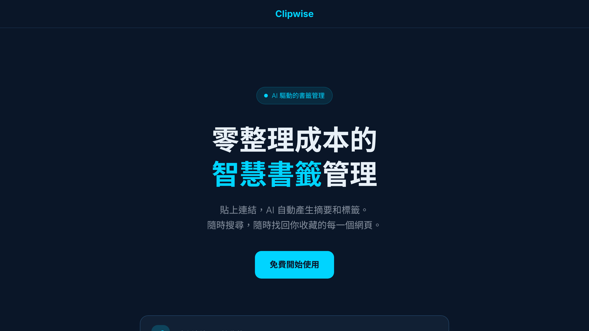
Clipwise Dashboard 截圖開發數據
10 個 User Stories
從想法到規格
PM 的主場：定義「做什麼」和「為什麼做」
AI 書籤管理工具」
/prospec-explore（AI 陪你釐清需求）
問題空間
解決什麼痛點？
解決方案
有哪些做法？取捨？
影響範圍
技術複雜度評估
/prospec-new-story（建立 User Story）
PM 花的時間：約 30 分鐘的對話
從規格到 Prototype
設計師的主場：把規格變成看得見的東西
9 個設計規格 × 20 種風格
= 180
個 HTML Prototype
| 頁面 | 描述 |
|---|---|
| Landing Page | 未登入首頁 |
| Auth | 登入 / 註冊 |
| Dashboard | 統計 + 最近書籤 |
| Bookmarks | 書籤列表 |
| Bookmark Detail | 書籤詳情彈窗 |
| Add Bookmark | 新增書籤流程 |
| Command Palette | Cmd+K 搜尋 |
| Settings | 設定頁面 |
| States | 空狀態、載入狀態 |
20 種視覺風格
耗時：4-8 小時（自動化 Ralph Loop 生成）
效果：設計師 / PM 快速瀏覽 → 挑選最佳風格 → 降低設計決策風險
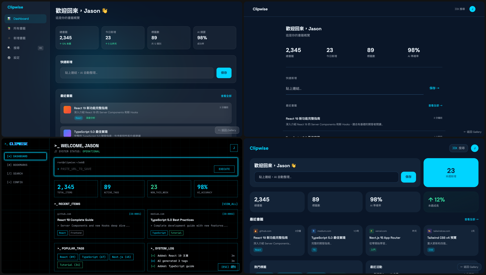
Prototype Gallery
同一份規格
多種設計方案
快速決策
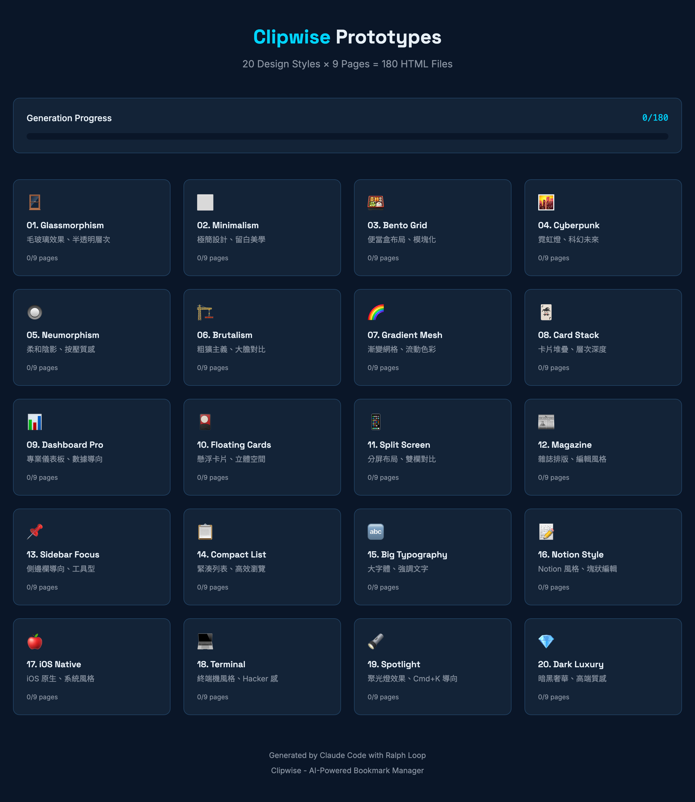
20 種風格 × 9 頁面 = 180 個方案
SDD 工具的演進 — 三個階段
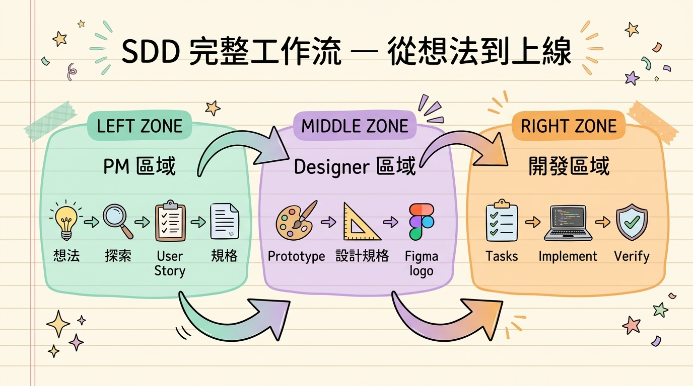
三代工具差異比較
| 面向 | Spec-Kit | OpenSpec | Prospec |
|---|---|---|---|
| 適用場景 | 0→1 全新專案 | 既有專案改造 | 全場景（0→1 + Brownfield） |
| 規格方式 | 全量重寫 | Delta Spec（只寫差異） | Delta Spec + 漸進累積 |
| AI 知識庫 | ✗ 無 | ✗ 無 | ✓ 三層架構（L0/L1/L2） |
| 設計整合 | ✗ 無 | ✗ 無 | ✓ design-spec + interaction-spec |
| 設計工具 | ✗ | ✗ | ✓ Figma / Pencil / Penpot / HTML |
| Token 效率 | 一次全載入 | 較省 | 節省 70-80% |
| 品質驗證 | 手動 | 三維度靜態檢查 | 5+1 維度 + MCP 截圖比對 |
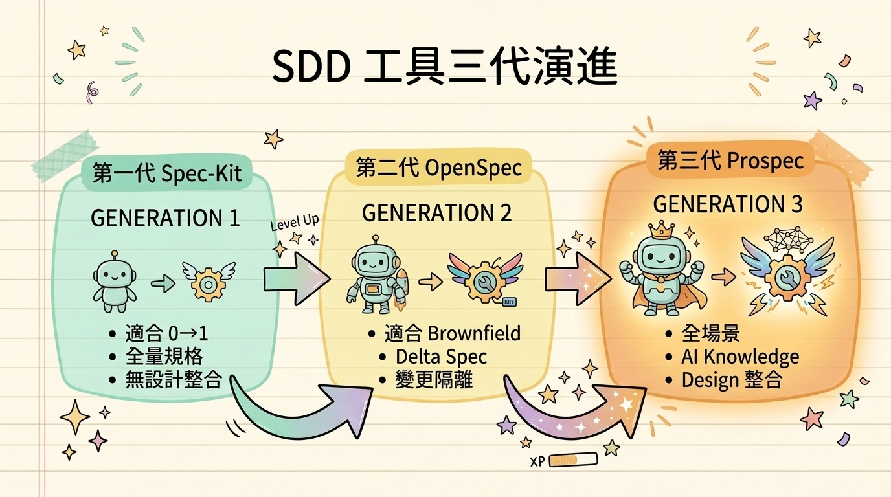
Prospec 的兩大殺手級功能
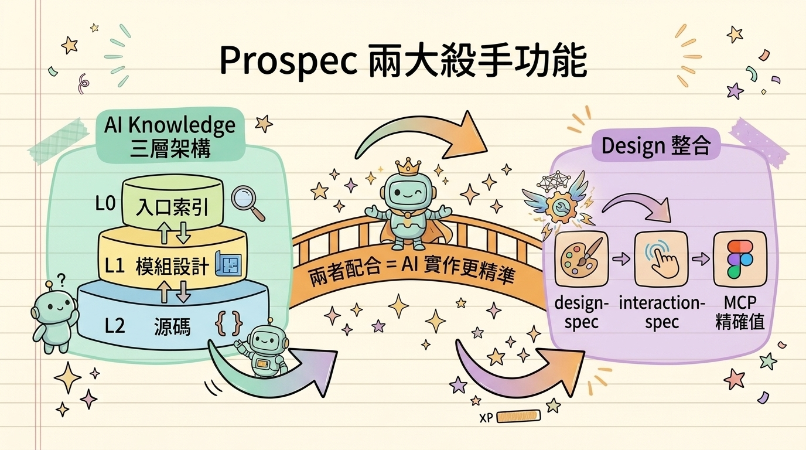
從 Design 到精準開發
痛點：設計稿和實作總是有落差
傳統流程的問題
- 設計師：「按照設計稿」
- 工程師：「我覺得差不多」
- 結果：顏色偏了、間距不對、狀態漏了
Prospec 的解法：節點式設計映射
每個設計節點都有對應的任務 → AI 照著做，不會猜測
Prospec 三層精準機制
設計規格
design-spec.md
- 設計令牌：顏色、字體、間距的精確值
- 元件結構：每個元件的 props 和 states
互動規格
interaction-spec.md
- 頁面流程：A → B → C 的狀態轉換
- 手勢操作：點擊、滑動、長按
Delta Spec
變更追蹤
- ADDED：新增了什麼設計
- MODIFIED：改了什麼（Before / After）
- REMOVED：移除了什麼（附原因）
（精確值）
（追蹤變更）
（打勾）
（不猜測）
工作流進化 — 之前 vs 現在
之前的做法（html.to.design 時代）
格式常跑掉
設計師要花時間修
現在的做法（Figma MCP 寫入 3/24 開放）
原生整合，不需要第三方工具
Node ID 直接取得
AI 從 Figma MCP 讀取精確值實作
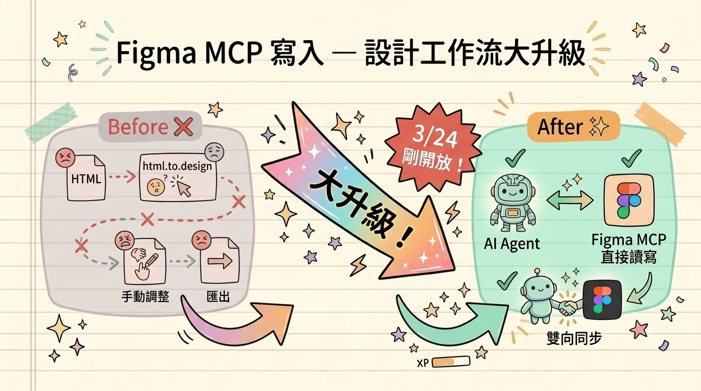
Figma MCP 新功能亮點
Figma = Single Source of Truth · 目前 Beta 免費
驗證 — 自動化品質閘門
Prospec Verify：5+1 維度審計
品質評分
全部 PASS
微小問題
需改善
待修正
不能部署
PM & Designer 可以直接看報告
不用看 code
完整流程回顧
PM 定義需求
↓
探索釐清
↓
10 個 User Story
↓
382 行規格文件
設計師產出設計
↓
180 個 Prototype
↓
選定風格
↓
節點映射任務
開發實作
↓
94% 完成率
↓
73 個檔案
↓
176 個測試
品質驗證
↓
品質評分
↓
設計一致性 ✓
↓
規格合規 ✓
從「我想做一個 AI 書籤工具」到可運行系統
SDD 讓每一步都可追溯
Claude Code 是什麼？
不只是 AI 聊天 — 是一個多角色協作系統
| 概念 | 比喻 | PM / Designer 怎麼用 |
|---|---|---|
| Skills | 工作劇本 | 定義好流程，一個指令跑完整套 |
| Agents | 虛擬團隊成員 | Product Strategist、UI/UX Designer... |
| Commands | 快捷鍵 | /product-plan、/design.prototype... |
PM 常用 Skills
Designer 常用 Skills
你不需要會寫 code — 你需要會「定義問題」和「描述想要什麼」
Agent 並行工作 — 一個人 = 一個團隊
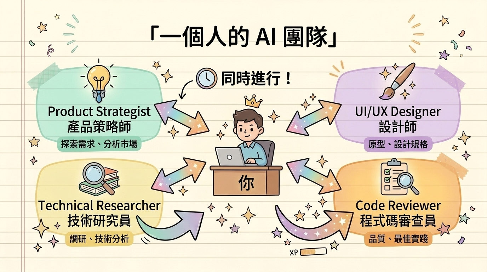
傳統：一個人做三件事 → 3 天
Agent：三個並行 → 30 分鐘
PM & Designer 的上手路徑
Week 1：靈感發想
跟 Claude 聊你的產品想法，它會幫你釐清問題、梳理方向
Week 2：產品規劃
用 /prospec-explore 探索需求
用 /prospec-new-story 建立 User Story
產出結構化的規格文件
Week 3：設計探索
用 /design.prototype 產出多種設計方案
用 /design.audit 檢查設計和規格對齊
快速挑選最佳設計風格
Week 4：落地開發
設計節點映射到任務
AI 照著任務清單實作
自動化品質驗證
可運行的產品
PM 推薦資源
ccforpms.com — 免費互動課程
12 小時 | 在 Claude Code 裡直接學習
- Module 1：基礎功能 — 平行 Agent、專案記憶
- Module 2：PRD 撰寫、數據分析、競品研究
- Module 3：Nano Banana 視覺素材生成
- Module 4：Vibe Coding — 規劃→建構→上線
aitmpl.com — PM 精選 Agent
- product-strategist — 產品策略與路線圖
- business-analyst — 商業流程分析
- market-researcher — 市場分析與機會評估
- competitive-analyst — 競品分析與定位策略
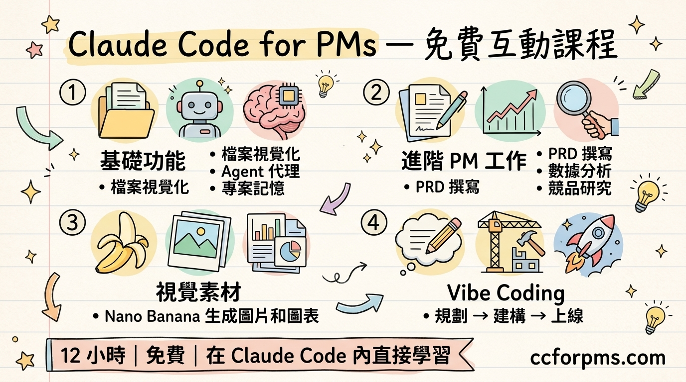
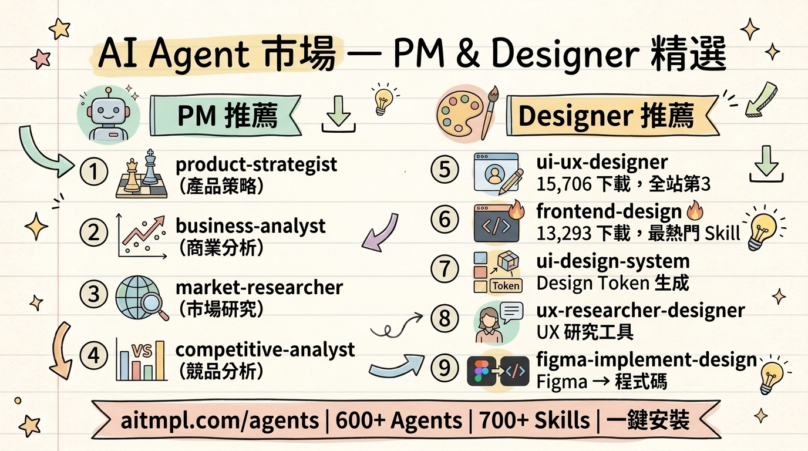
Designer 推薦資源
ui-ux-pro-max Skill — 設計智能系統
UI 設計風格
配色方案
字體配對
UX 最佳實踐
用自然語言描述需求 → 自動生成完整設計系統
aitmpl.com — Designer 精選
- ui-ux-designer — 15,706 下載，全站第 3 熱門
- frontend-design — 13,293 下載，最熱門 Skill
- ui-design-system — Design Token + 元件文件
- ux-researcher-designer — Persona、Journey Map
- figma-implement-design — Figma → 1:1 程式碼
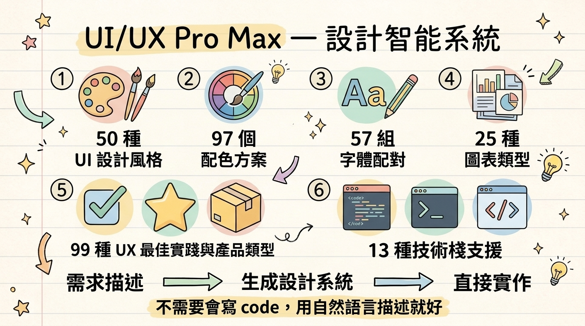
一鍵安裝，馬上開始
安裝 Claude Code
或到 claude.ai/code 下載桌面版
安裝推薦 Skills
開始使用
用自然語言對話就好！
今天的 Takeaway
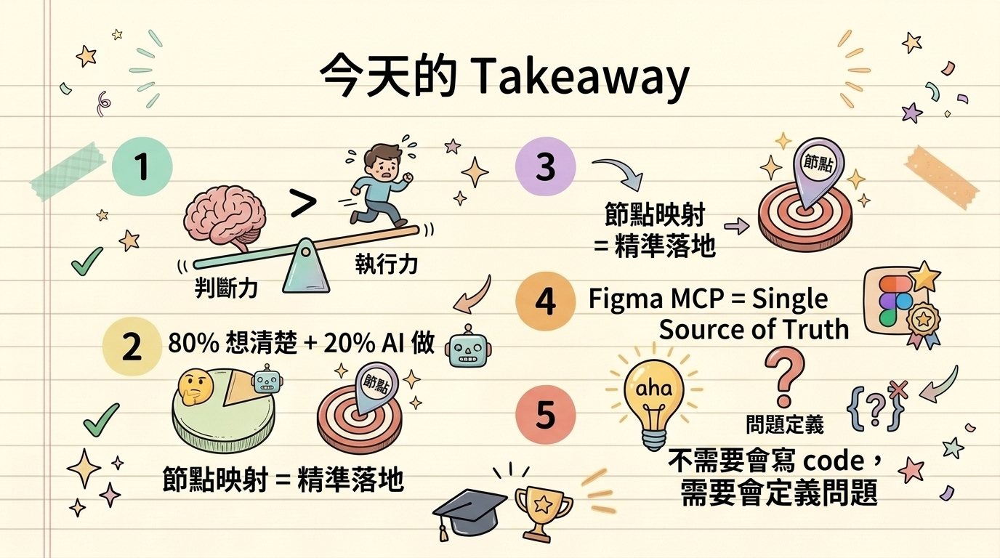
Takeaway 總結圖Q&A
想試試看？
Claude Code
claude.ai/code
你需要什麼
一個想法 +
願意花 30 分鐘學習
推薦起步
從跟 Claude 聊
你的產品想法開始
我的 Threads：@ci.fullstack
持續分享 AI 驅動開發的實戰內容